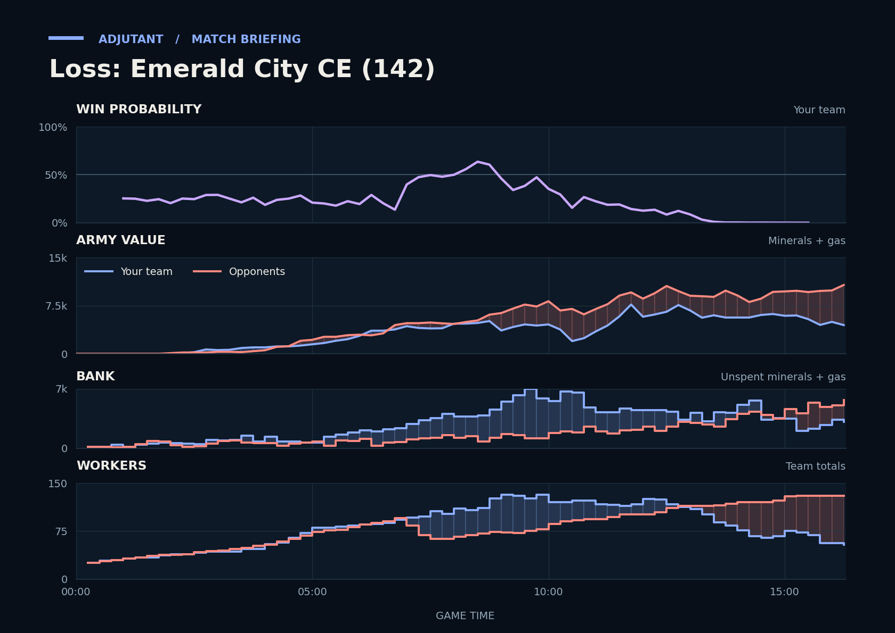

Loss: Emerald City CE (142)
Provisional debrief. The full report (timeline, insights and analysis) is being generated.

**Loss.** The duo lost because they went into the big fight around TakeTheTip's fourth and third bases about 1.7x behind on army value, and the last fight began behind too.
**Why**
- 8:50–9:15: The duo lost about 2,200 army, mostly Zerglings and Banshees, to Marines, leaving them further behind on army.
- 9:37–11:36: TakeTheTip lost 21 Drones plus the fourth and third Hatcheries, leaving the duo's army behind.
- 15:14–15:55: The duo went in about 1.1x behind on army value and lost army evenly with bbbbbbbbbb, deciding the game.